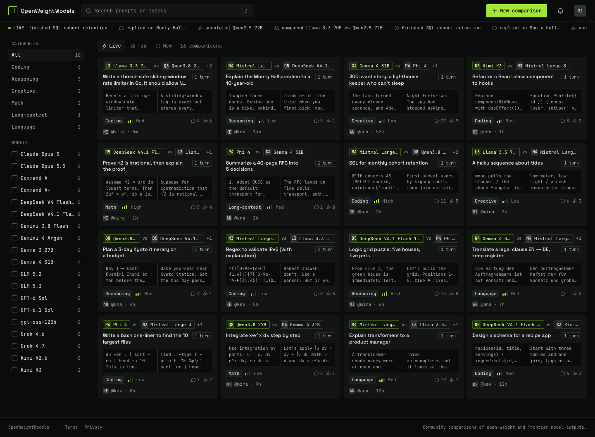
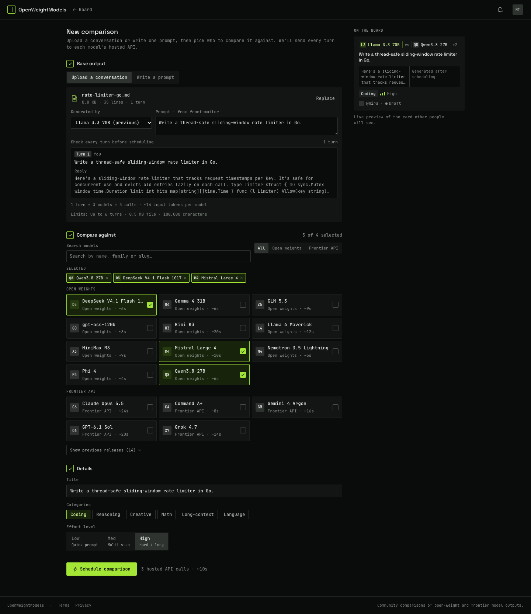
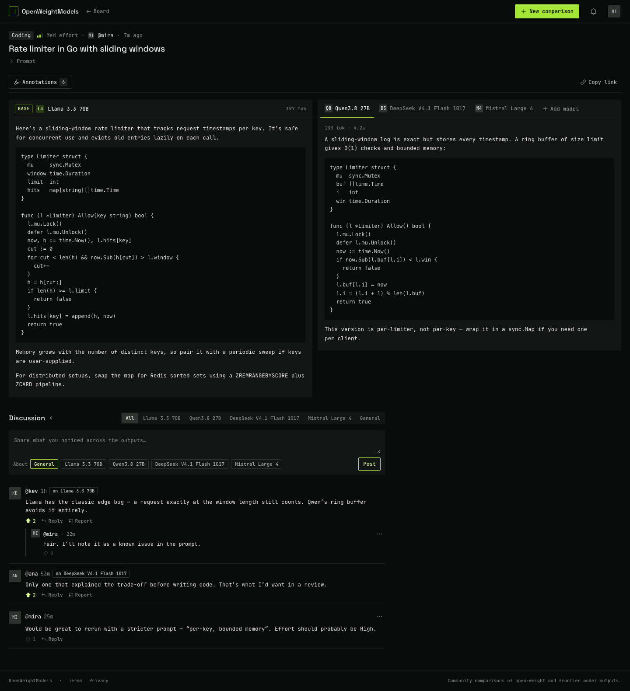
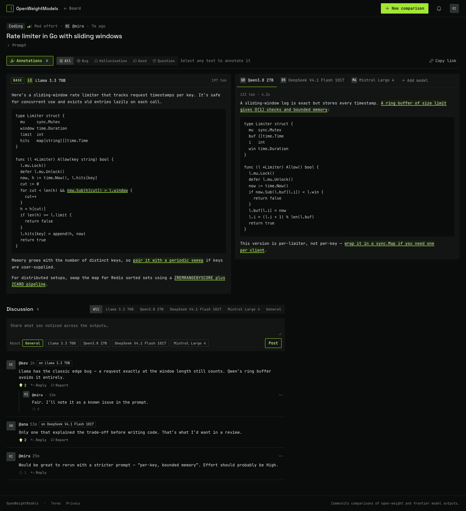
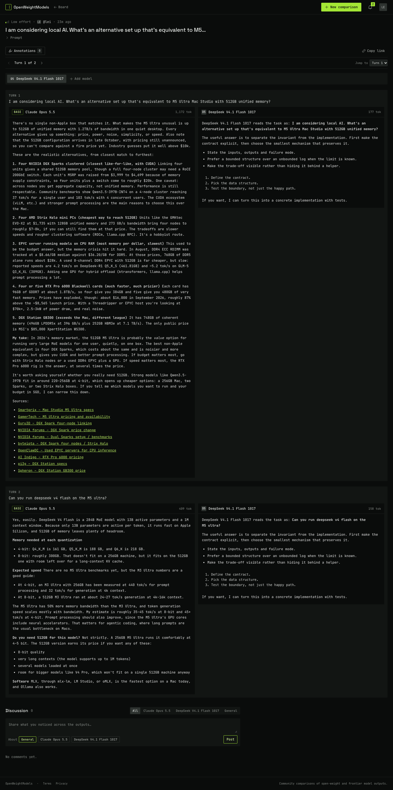
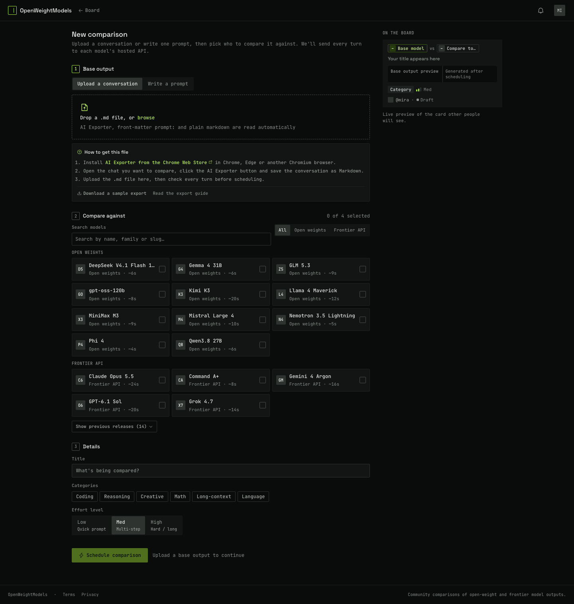

Board
The public feed: sticky header with search, live activity ticker, filter sidebar, sort tabs, and a dense grid of comparison cards.
Open board.html →
New comparison — filled
The create flow after uploading a base output: imported file summary and turn preview, model picker with selected challengers, details, and the live “On the board” card preview.
Open new-comparison.html →
Comparison — annotations off
The reading view: prompt header, base response pinned left, challenger tabs right, then the discussion composer and threads.
Open comparison.html →
Comparison — annotations on
The same comparison with the annotation overlay enabled: highlighted spans, kind filters, and the annotation hint in the toolbar.
Open comparison-annotated.html →
Comparison — multi-turn
A two-turn conversation: the prompt and both models’ replies are grouped per turn, with a turn rail to jump between turns and per-turn response panes.
Open comparison-turns.html →
New comparison — empty
The first-run state: the upload dropzone, the “How to get this file” guidance, the empty model picker, and the disabled submit button.
Open new-comparison-empty.html →About the files
Each screen is a standalone HTML file with the app’s CSS inlined and its fonts
copied into assets/fonts. No build step or server is needed — open
any file directly in a browser. Links between the captured screens work;
other links and every button are disabled.
What still works
- Hover, focus and active styles
- The board’s scrolling live ticker
- Sticky header, sidebar and annotation toolbar positioning
- Responsive layout if the window is resized
What this is not
These are faithful snapshots of the current product, not prototypes of a new direction. Data is deterministic dev seed content (models, users, comments and annotations are fictional). The interface is dense and desktop-first by design.
Full-size screenshots
Full-page PNGs live in screenshots/. The images above are cropped
at the top of each page for quick comparison.